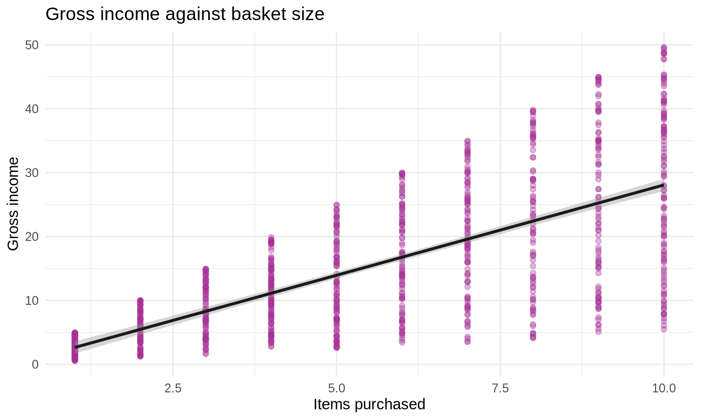
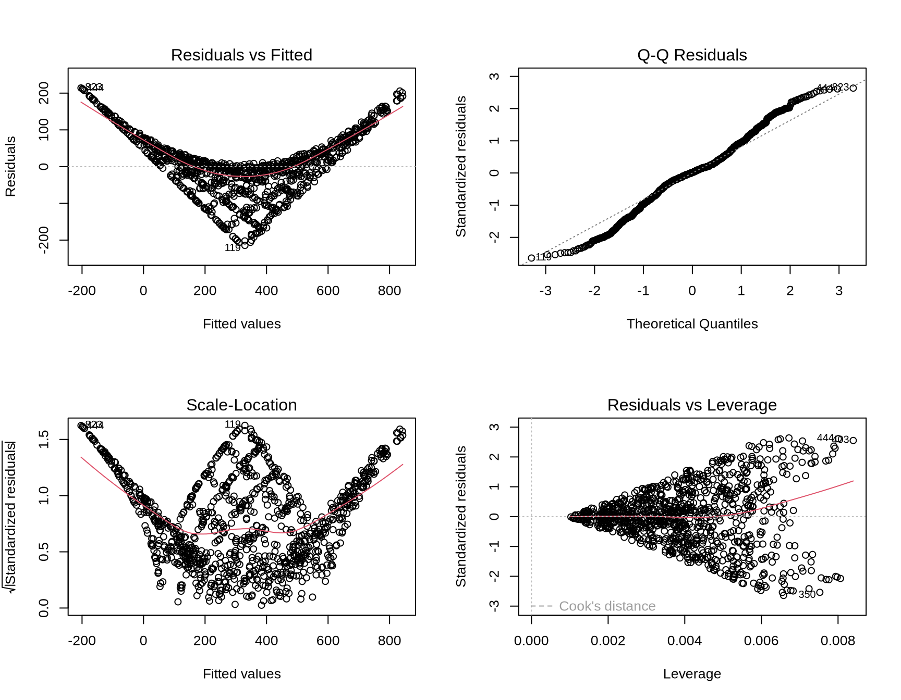
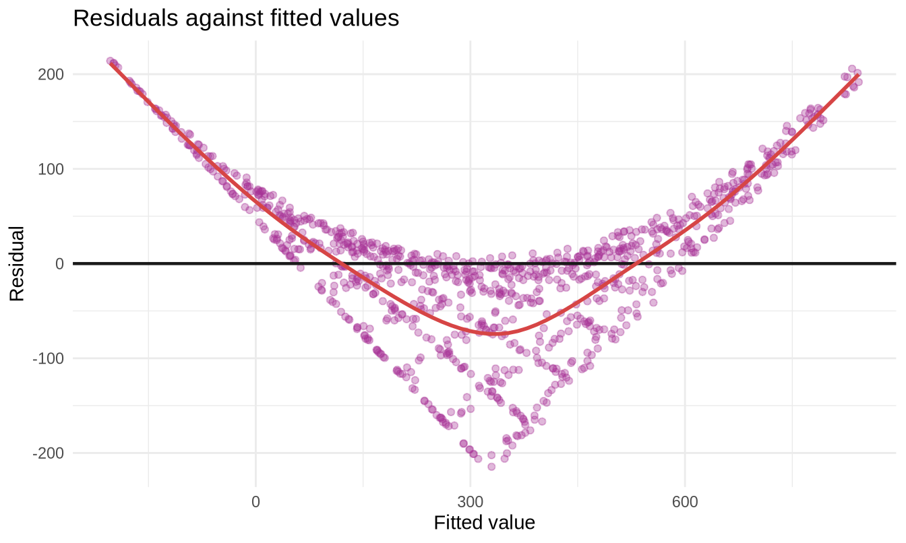

Show the code
library(tidyverse)
library(readxl)
library(broom)
sales <- read_excel("../data/supermarket_sales.xlsx")307102 Descriptive Statistics for Business | University of Petra
Every chunk runs.
A structural warning about this dataset. Total is an exact arithmetic function of Quantity and Unit price - specifically Quantity * Unit price * 1.05. Any regression of Total on both predictors will therefore have an R-squared very close to 1.
This is a feature for teaching, not a bug. It gives students a model that fits essentially perfectly and still teaches them almost nothing about the business, which is the most valuable lesson in the section. Make that point explicitly rather than letting them believe they have built a triumph.
library(tidyverse)
library(readxl)
library(broom)
sales <- read_excel("../data/supermarket_sales.xlsx")m1 <- lm(`gross income` ~ Quantity, data = sales)
summary(m1)#>
#> Call:
#> lm(formula = `gross income` ~ Quantity, data = sales)
#>
#> Residuals:
#> Min 1Q Median 3Q Max
#> -22.5867 -4.7340 -0.0195 4.7969 21.5833
#>
#> Coefficients:
#> Estimate Std. Error t value Pr(>|t|)
#> (Intercept) -0.19016 0.56038 -0.339 0.734
#> Quantity 2.82569 0.08985 31.449 <2e-16 ***
#> ---
#> Signif. codes: 0 '***' 0.001 '**' 0.01 '*' 0.05 '.' 0.1 ' ' 1
#>
#> Residual standard error: 8.302 on 998 degrees of freedom
#> Multiple R-squared: 0.4977, Adjusted R-squared: 0.4972
#> F-statistic: 989 on 1 and 998 DF, p-value: < 2.2e-16tidy(m1)#> # A tibble: 2 × 5
#> term estimate std.error statistic p.value
#> <chr> <dbl> <dbl> <dbl> <dbl>
#> 1 (Intercept) -0.190 0.560 -0.339 7.34e- 1
#> 2 Quantity 2.83 0.0898 31.4 2.06e-151glance(m1) |> select(r.squared, adj.r.squared, sigma, nobs)#> # A tibble: 1 × 4
#> r.squared adj.r.squared sigma nobs
#> <dbl> <dbl> <dbl> <int>
#> 1 0.498 0.497 8.30 1000ggplot(sales, aes(x = Quantity, y = `gross income`)) +
geom_point(colour = "#A83296", alpha = 0.35) +
geom_smooth(method = "lm", colour = "#1A1A1A") +
labs(title = "Gross income against basket size",
x = "Items purchased", y = "Gross income") +
theme_minimal()
Expected results. A slope of 2.83, strongly significant. An intercept of -0.19, not significantly different from zero (p = 0.73). R-squared of 0.498.
Model answer.
Each additional item in the basket is associated with about 2.83 more in gross income. The intercept of -0.19 is not significantly different from zero and is not meaningfully interpretable in any case, since a transaction with no items cannot occur - though it is reassuring that it lands near zero, which is where a sensible model should put it.
The model explains about 50 percent of the variation in gross income, leaving the other half to something else - principally the unit price of what was bought, which this model ignores entirely.
The model is useful as a rough guide but should not be relied on for individual predictions.
Marking guidance. Three things carry the marks:
Discussion prompt. Ask what the missing 50 percent is. The answer - unit price - is sitting in the dataset, which motivates Exercise 2 naturally.
m2 <- lm(Total ~ Quantity + `Unit price` + Rating, data = sales)
summary(m2)#>
#> Call:
#> lm(formula = Total ~ Quantity + `Unit price` + Rating, data = sales)
#>
#> Residuals:
#> Min 1Q Median 3Q Max
#> -214.553 -45.078 1.291 44.659 214.059
#>
#> Coefficients:
#> Estimate Std. Error t value Pr(>|t|)
#> (Intercept) -304.43730 13.07914 -23.277 <2e-16 ***
#> Quantity 58.74523 0.88201 66.604 <2e-16 ***
#> `Unit price` 5.81205 0.09731 59.725 <2e-16 ***
#> Rating -2.84702 1.50034 -1.898 0.058 .
#> ---
#> Signif. codes: 0 '***' 0.001 '**' 0.01 '*' 0.05 '.' 0.1 ' ' 1
#>
#> Residual standard error: 81.48 on 996 degrees of freedom
#> Multiple R-squared: 0.8905, Adjusted R-squared: 0.8902
#> F-statistic: 2700 on 3 and 996 DF, p-value: < 2.2e-16tidy(m2)#> # A tibble: 4 × 5
#> term estimate std.error statistic p.value
#> <chr> <dbl> <dbl> <dbl> <dbl>
#> 1 (Intercept) -304. 13.1 -23.3 4.85e-96
#> 2 Quantity 58.7 0.882 66.6 0
#> 3 `Unit price` 5.81 0.0973 59.7 0
#> 4 Rating -2.85 1.50 -1.90 5.80e- 2glance(m2) |> select(r.squared, adj.r.squared, sigma)#> # A tibble: 1 × 3
#> r.squared adj.r.squared sigma
#> <dbl> <dbl> <dbl>
#> 1 0.891 0.890 81.5Expected results. Quantity (58.7) and Unit price (5.81) are both overwhelmingly significant. R-squared is 0.891.
Rating has a coefficient of -2.85 with p = 0.058 - just above the conventional threshold, and negative.
Rating at p = 0.058 is the single best teaching moment in the notebook, and it is worth planning the session around it.
Ask the class: is rating a significant predictor? The honest answer is that the question is badly posed. At alpha = 0.05 you fail to reject; at alpha = 0.10 you reject. Nothing about the underlying reality changes between those two sentences, which is precisely why treating 0.05 as a bright line is indefensible.
Then ask the better question: is the effect big enough to matter? A coefficient of -2.85 means that among baskets of the same size and price, a one-point higher rating is associated with about 2.85 less spent. Against a mean transaction of 323 and a standard deviation of 246, that is roughly one percent of a standard deviation per rating point. It is negligible whichever side of 0.05 it lands on.
This is the effect-size lesson from section 3.3, arriving unprompted in a real model.
Model answer.
Quantity and unit price both strongly predict the transaction total, which is unsurprising since the total is calculated from them. Rating has a small negative coefficient of -2.85 with a p-value of 0.058 - marginally above the conventional 0.05 threshold.
That coefficient means that among transactions with the same basket size and the same unit price, a one-point higher customer rating is associated with about 2.85 less spent. Given that transaction totals have a standard deviation of about 246, this effect is far too small to be of any practical interest, regardless of where its p-value sits relative to 0.05.
In short: once you know what someone bought, knowing how satisfied they were tells you essentially nothing further about how much they spent.
Marking guidance. The Rating interpretation is the exercise, and it is where most students lose marks. Three things to look for:
The strongest answers note that the sign is negative, which is the opposite of the intuition most people bring, and then correctly decline to make anything of it because the effect is too small to distinguish from noise.
R-squared above 0.9 looks like a triumph. Ask the class what the model has actually taught them about the business.
The answer is nothing. Total is Quantity times Unit price times 1.05, so the model has rediscovered a definition. A near-perfect fit obtained by predicting a variable from its own components is a warning sign, not an achievement.
This connects directly to the multicollinearity example in section 6 of the student notebook, and it is the single most transferable idea in this section: always ask whether your predictors are logically prior to your outcome, or merely arithmetically related to it.
par(mfrow = c(2, 2))
plot(m2)
par(mfrow = c(1, 1))aug2 <- augment(m2)
ggplot(aug2, aes(x = .fitted, y = .resid)) +
geom_point(colour = "#A83296", alpha = 0.35) +
geom_hline(yintercept = 0, colour = "#1A1A1A", linewidth = 0.8) +
geom_smooth(se = FALSE, colour = "#D64545") +
labs(title = "Residuals against fitted values",
x = "Fitted value", y = "Residual") +
theme_minimal()
Expected pattern. The residuals are tiny relative to the fitted values, and they show a clear funnel shape - spread widening as the fitted value grows.
Model answer.
Linearity: the residuals-versus-fitted plot shows no curvature, so a linear form is appropriate. This is expected, since the true relationship is exactly linear by construction.
Independence: each row is a separate transaction, so independence is reasonable on design grounds. Nothing in the data suggests otherwise.
Homoscedasticity: this assumption fails. The residuals fan out as fitted values increase, which the Scale-Location plot confirms with an upward slope. Larger transactions have larger errors.
Normality of residuals: the Q-Q plot shows departures in the tails, though with 1,000 observations the model is fairly robust to this.
The heteroscedasticity is the finding that would make me cautious. It does not bias the coefficients, but it makes the standard errors - and therefore every p-value and confidence interval in the output - unreliable.
Marking guidance. Students must comment on all four assumptions and must identify the funnel shape. Simply printing the plots earns nothing.
The distinction worth rewarding: heteroscedasticity affects the standard errors, not the coefficient estimates. A student who says “the model is wrong” has overstated it; a student who says “the coefficients are still fine but I would not trust the p-values” has understood it.
Why the funnel appears here. The total is a product of two quantities, so rounding and variation scale with the size of the transaction rather than staying constant. Multiplicative processes routinely produce this pattern, and the standard remedy - modelling log(Total) instead - is worth mentioning to stronger students even though it is beyond the syllabus.
new_basket <- tibble(
Quantity = 6,
`Unit price` = 45,
Rating = 8
)
predict(m2, newdata = new_basket, interval = "confidence") |> round(2)#> fit lwr upr
#> 1 286.8 280.51 293.09predict(m2, newdata = new_basket, interval = "prediction") |> round(2)#> fit lwr upr
#> 1 286.8 126.78 446.82Expected results. A point prediction of 286.80, with a confidence interval of roughly [280.5, 293.1] and a prediction interval of roughly [126.8, 446.8] - about 25 times wider.
Note that the pure arithmetic answer would be 6 times 45 times 1.05, or 283.5. The model returns 286.80 because it also carries an intercept and the small negative Rating term. Students who notice that gap and can explain it are doing well.
Model answer.
The predicted total is about 287. The confidence interval is narrow because it describes the average total across all baskets matching this description, and averages are estimated precisely with 1,000 observations. The prediction interval is wider because it must also account for the scatter of individual transactions around that average.
A shop manager forecasting the revenue of one particular customer should use the prediction interval. The confidence interval would be appropriate only for a question about the average across many such baskets - for example, budgeting for a thousand similar transactions.
Marking guidance. The choice between the intervals is the mark, and the justification must turn on individual versus average. This is a genuinely common professional error: quoting a confidence interval when a client asks about their own case understates the uncertainty substantially, and the promise will be broken far more often than the stated confidence level implies.
mod_a <- lm(Total ~ Quantity, data = sales)
mod_b <- lm(Total ~ Quantity + `Unit price`, data = sales)
mod_c <- lm(Total ~ Quantity + `Unit price` + Rating + Branch + `Customer type`,
data = sales)
bind_rows(
glance(mod_a) |> mutate(model = "A: Quantity"),
glance(mod_b) |> mutate(model = "B: + Unit price"),
glance(mod_c) |> mutate(model = "C: + Rating, Branch, Customer type")
) |>
select(model, r.squared, adj.r.squared, sigma, df)#> # A tibble: 3 × 5
#> model r.squared adj.r.squared sigma df
#> <chr> <dbl> <dbl> <dbl> <dbl>
#> 1 A: Quantity 0.498 0.497 174. 1
#> 2 B: + Unit price 0.890 0.890 81.6 2
#> 3 C: + Rating, Branch, Customer type 0.891 0.890 81.5 6Expected pattern.
| Model | R-squared | Adjusted R-squared |
|---|---|---|
| A: Quantity | 0.4977 | 0.4972 |
| B: + Unit price | 0.8901 | 0.8899 |
| C: + Rating, Branch, Customer type | 0.8907 | 0.8901 |
A large jump from A to B. From B to C, plain R-squared rises by 0.0006 while adjusted R-squared moves by almost nothing - the textbook signature of predictors that do not earn their place.
Model answer.
Adding unit price to the quantity-only model transforms the fit, taking R-squared from 0.498 to 0.890. Adding rating, branch and customer type produces essentially no further improvement: R-squared rises by 0.0006 and adjusted R-squared is unchanged to three decimal places, confirming those three predictors earn nothing.
I would recommend Model B on parsimony grounds - it achieves the same explanatory power with three fewer predictors.
However, no model here tells a manager anything actionable.
Totalis defined as quantity times unit price plus tax, so Model B has recovered an accounting identity rather than discovered a business relationship. The genuinely useful finding is the negative one: branch, customer type and satisfaction contribute nothing to explaining transaction value once you know what was in the basket.To model something a manager could act on, I would need a different outcome variable - repeat visit rate, or basket size itself - and predictors that are genuinely prior to it rather than components of it.
Marking guidance. This exercise separates students who can operate the software from students who can think.
| Band | What it looks like |
|---|---|
| Excellent | Compares adjusted R-squared correctly, recommends a model on parsimony, and recognises the circularity of predicting Total from its own components. Proposes a better-posed question. |
| Good | Correct comparison and a justified recommendation, but treats the high R-squared as a genuine success. |
| Adequate | Produces the table and picks the highest R-squared without discussing parsimony. |
| Weak | Reports plain R-squared only, or recommends Model C because “it has the highest R-squared”. |
The last row is the trap the exercise is built around. A student who recommends Model C on plain R-squared has ignored the section’s explicit warning that R-squared never decreases when predictors are added.
Where students get stuck.
Timing. Sections 1 to 4 fill one 90-minute session; sections 5 and 6 fill a second. Do not cut section 5 - a regression whose assumptions were never checked is not an analysis, and diagnostics are what separates this from a curve-fitting exercise.
A better dataset for the final project. Because Total is arithmetically determined here, the superstore dataset in R-Version/data/ is a stronger choice for assessed regression work. Profit there is genuinely predictable-but-not-determined from Sales, Discount and Quantity, and the relationship with Discount is strongly negative and commercially interesting. It also contains real heteroscedasticity and influential outliers, so the diagnostics have something to find.
Connecting to the Excel track. Excel’s Analysis ToolPak regression produces coefficients, standard errors, t-statistics, p-values and R-squared - broadly the same table as summary(). It offers residual plots but no Cook’s distance, no leverage diagnostics, and no straightforward way to produce prediction intervals. For anything beyond a single fitted line, R is substantially less work.